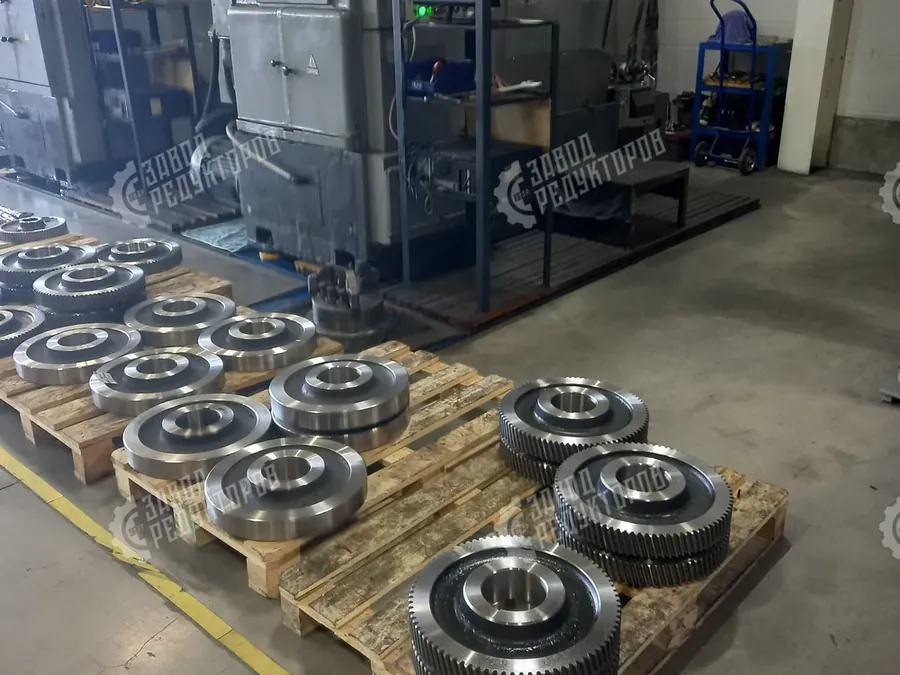

Заказать редуктор напрямую с завода проще, чем кажется: достаточно собрать исходные данные, согласовать подбор и оформить заявку. В этом материале разберём по шагам весь путь — от сбора параметров и шильда до отгрузки и комплекта документов. Покупка редуктора от производителя без посредников экономит и деньги, и сроки.
Чтобы заказать редуктор или мотор-редуктор без ошибок, начните с исходных данных. Их источник — техдокументация на оборудование, шильдик электродвигателя и шильдик старого редуктора, если он есть. Перепишите модель, мощность, передаточное число и заводской номер, а узел сфотографируйте целиком и крупно — по шильду.
Чем полнее исходные данные, тем точнее подбор и тем быстрее вы получите коммерческое предложение. Фото шильда снимайте при хорошем освещении, без бликов, чтобы читались все строки маркировки. Если узел смонтирован и шильд недоступен, сфотографируйте редуктор целиком с разных сторон и замерьте присоединительные размеры рулеткой или штангенциркулем — этого достаточно, чтобы инженер определил тип и подобрал замену.

На основе собранных данных инженер подбирает типоразмер: проверяет запас по моменту, сервис-фактор, передаточное число и присоединительные размеры. На этом этапе уточняется исполнение (лапы, фланец, комбинированное), положение монтажа и сторона выходного вала. Если заменяете импортный привод — подбирается габаритный и присоединительный аналог, который встаёт без переделки рамы. Когда точного аналога в стандартном ряду нет, завод предложит ближайший типоразмер или изготовит исполнение под ваши размеры. Отправить данные на расчёт можно через форму подбора редуктора — это бесплатно и ни к чему не обязывает.
После подбора вы получаете коммерческое предложение: конкретная модель, цена, срок изготовления и условия отгрузки. Цену имеет смысл согласовать заранее — на стоимость влияют типоразмер, исполнение, объём партии и срочность. Ориентиры по моделям и сериям приведены на странице цен на редукторы. Заказ редуктора от производителя означает прозрачную цену без наценки посредника.
После согласования КП оформляется счёт и заключается договор. Для юридических лиц работаем по безналичному расчёту, отгрузка — после поступления оплаты или по согласованным условиям. Серийные позиции отгружаются со склада, изготовление под заказ — от 3 дней в зависимости от типоразмера и загрузки производства; срочные заказы выполняются в приоритете. Отгрузка идёт транспортной компанией по всей России; самовывоз с производства в Челябинске тоже возможен. На каждом этапе менеджер держит вас в курсе статуса заказа и сообщает дату готовности и отгрузки.

Вместе с редуктором вы получаете полный комплект документов: паспорт изделия с техническими характеристиками, счёт-фактуру и накладную, при необходимости — копии сертификатов. В паспорте указаны модель, передаточное число, момент и заводской номер — по нему в будущем легко повторить заказ или подобрать аналог. Паспорт нужен для постановки на учёт, гарантийного обслуживания и последующего подбора, поэтому храните его вместе с оборудованием. Бухгалтерские документы оформляются на реквизиты плательщика и приходят вместе с грузом или электронно.
Редуктор от производителя — это цена без посреднической наценки, прямой контакт с инженером и реальные сроки изготовления, а не «обещанные перепродавцом». Завод отвечает за качество по гарантии, может изготовить нестандартное исполнение, переходный фланец или спецвал и поддерживает повторные заказы по тем же чертежам. Покупка через цепочку перекупщиков добавляет к цене 20–40% и удлиняет сроки — при заказе напрямую этого нет.
| Сбор данных | шильд, фото узла, модель, мощность, момент, размеры |
|---|---|
| Подбор | заявка на расчёт, исходные параметры механизма |
| Согласование | рассмотрение КП, уточнение цены и срока |
| Оплата | счёт, договор, реквизиты плательщика |
| Отгрузка | адрес доставки или ТК, контактное лицо |
| Документы | паспорт, счёт-фактура, накладная, сертификаты |
Чтобы спланировать поставку, полезно понимать, сколько времени занимает каждый шаг и что от вас нужно на входе. Ниже — ориентировочные сроки этапов заказа редуктора напрямую с завода: от первой заявки до отгрузки. Реальные сроки зависят от типоразмера, исполнения и текущей загрузки производства, но порядок цифр остаётся таким для большинства позиций.
| Заявка | в день обращения — нужны модель, шильд или фото узла и параметры механизма |
|---|---|
| Расчёт и подбор | от 15 минут до 1 рабочего дня — исходные данные по мощности, моменту и размерам |
| КП | в тот же день после подбора — согласование модели, цены и срока изготовления |
| Оплата | 1–2 дня — счёт и договор, реквизиты плательщика, безналичный расчёт |
| Отгрузка | со склада сразу, под заказ от 3 дней — адрес доставки или ТК, контактное лицо |
Скорость заказа напрямую зависит от полноты исходных данных. Если вы сразу присылаете разборчивое фото шильда, мощность, обороты и присоединительные размеры, инженер подбирает типоразмер и формирует коммерческое предложение в тот же день — без уточняющих писем и потери времени. Когда шильд недоступен, помогает фото узла с разных сторон и пара замеров рулеткой: этого хватает, чтобы определить тип и подобрать замену или габаритный аналог.
Заказ редуктора от производителя без посредников выгоден не только ценой, но и предсказуемостью: вы общаетесь напрямую с инженером, который отвечает за расчёт, и видите реальный срок изготовления, а не «обещанный перепродавцом». Завод поддерживает повторные заказы по тем же чертежам, может изготовить нестандартное исполнение, переходный фланец или спецвал — и держит вас в курсе статуса на каждом этапе вплоть до отгрузки и передачи документов.
Заказать редуктор от производителя — это пять понятных шагов: собрать данные, согласовать подбор, получить КП, оплатить и забрать изделие с документами. Соберите параметры по шильду и фото или просто опишите задачу — инженер Завода Редукторов рассчитает подбор и пришлёт КП. Напишите нам через страницу контактов или оставьте заявку прямо сейчас.
Чтобы заказать редуктор от производителя, достаточно прислать модель, шильд или фото узла — инженер Завода Редукторов рассчитает подбор и пришлёт КП. Прямой заказ редуктора и мотор-редуктора напрямую с завода без посредников означает цену без наценки, реальные сроки изготовления от 3 дней и гарантию завода. Подбираем серийные позиции и габаритные аналоги импортных приводов, изготавливаем нестандартное исполнение, переходный фланец и спецвал под ваши присоединительные размеры.
Заказать редуктор от производителя выгоднее, чем покупать через перекупщиков: прямой контакт с инженером, прозрачная цена и предсказуемый срок. Соберите исходные данные по шильду и фото, отправьте на расчёт — и получите коммерческое предложение с моделью, ценой и сроком отгрузки.
Пришлите модель, шильд или опишите задачу — рассчитаем подбор и пришлём КП в течение 15 минут.
Оставить заявку